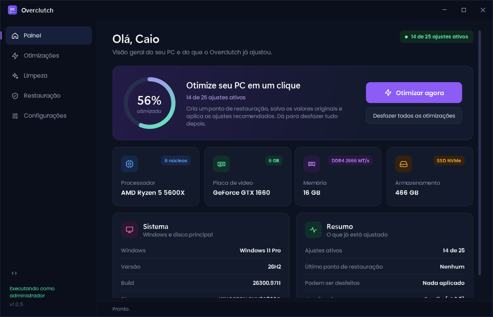

Frames estáveis. Mira onde você quer.
O Overclutch ajusta o Windows para jogos com um clique: menos travadas, menos input lag e nada que não dê para desfazer.
Windows 10 e 11, 64 bits. Código aberto sob licença MIT.
O que o Overclutch muda no seu PC
São 25 ajustes oficiais do Windows. Os recomendados entram no botão Otimizar agora; os opcionais você liga se quiser. Cada um mostra se está ativo no app.
Feito para entender em dez segundos
Um botão para otimizar, uma lista para conferir e uma aba para limpar o PC.

Instalar leva um minuto
Baixe o instalador
Um arquivo de cerca de 2 MB. Não precisa de nenhum outro programa.
Siga o assistente
Escolha a pasta e os atalhos. A instalação não pede senha de administrador.
Clique em Otimizar agora
O app cria um ponto de restauração, aplica os ajustes recomendados e avisa se precisa reiniciar.
Se o Windows mostrar "O Windows protegeu o computador": isso acontece com programas novos que ainda não têm assinatura digital paga. Clique em Mais informações e depois em Executar assim mesmo. O código é aberto, então você pode conferir tudo o que ele faz.
Se não gostar, volta tudo
Desfazer em um clique
Antes de cada mudança o valor original é salvo. O botão Desfazer devolve exatamente o que estava lá.
Ponto de restauração
O Otimizar agora cria um ponto de restauração do Windows antes de começar, como segunda camada de segurança.
Modo simulação
Mostra no registro tudo o que seria alterado, sem mudar nada. Bom para conferir antes de aplicar.
Grátis e de código aberto
O Overclutch está em fase de testes e é gratuito para quem quiser usar. O código fica público no GitHub: dá para ler, sugerir melhorias e reportar problemas.